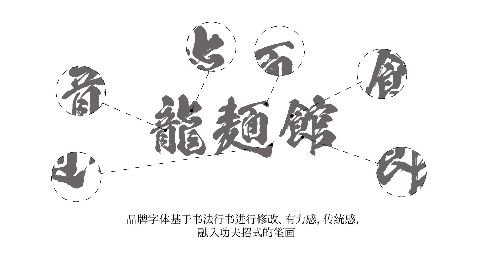
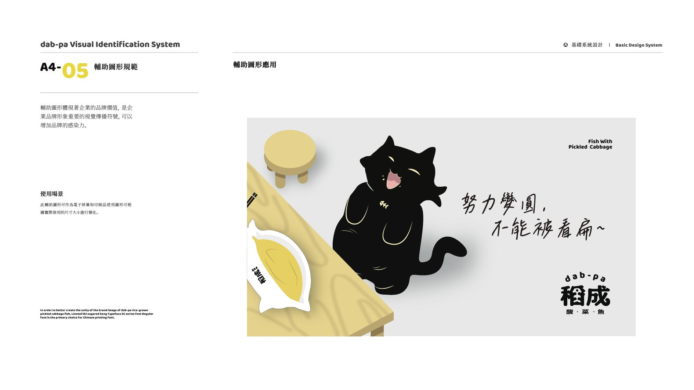

品牌全案
从品类里的那个问题出发：这家店到底要被怎样记住。定位关键词、超级符号、识别系统和应用规范一起考虑，而不是先画一张标志再去填空。
- 定位与视觉母题
- 超级符号与识别系统
- 应用规范，能被别人继续用
Four capabilities, one system. The mix changes with the brief — a noodle shop and a yogurt brand do not need the same stack.
品牌全案、字体、平面包装、IP 与插画。偏餐饮，也接需要被记住的消费品牌。按问题组合，不按套餐报价。
从品类里的那个问题出发：这家店到底要被怎样记住。定位关键词、超级符号、识别系统和应用规范一起考虑，而不是先画一张标志再去填空。

标题字、品牌专用字、菜单和招牌上的排印气质。字是品牌资产：龍麵館把书法收进功夫笔势，而不是借一套现成黑体交差。

主视觉、包装结构、杯套、袋装、菜单和空间物料。识别要在货架和柜台上还认得出，而不是只在提案页里好看。

角色、图形语言和场景叙事。给品牌一个可以被传播的情绪面：可以是一组图案，也可以是一个会在包装和店里反复出现的形象。